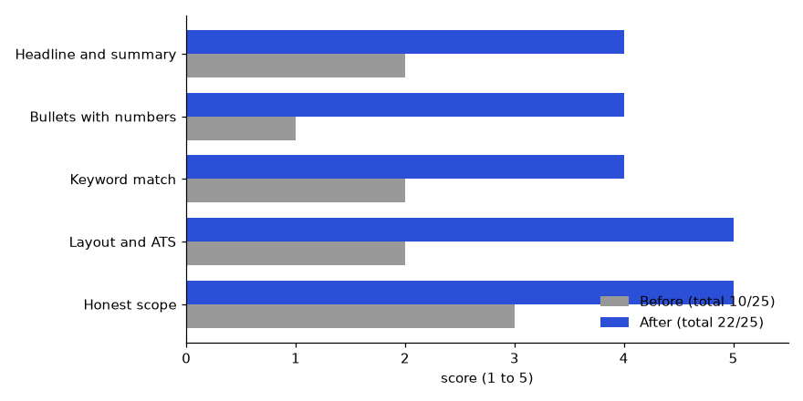

Chapter 15 gave you the project method and two public-proof projects. This chapter adds two projects that sharpen the last step of the journey: being chosen. In Project A you build a mock-interview kit: a question tracker in SQLite, a STAR story template, a scoring sheet, and a script that quizzes you on your weakest questions first. In Project B you run a resume and LinkedIn refresh sprint: you rewrite weak bullets into bullets with impact numbers, and a small script flags the weak ones for you. Both projects use only the Python standard library, and every output shown below was produced by running the code. Chapter 7 (Technical Interview Preparation by Role) gives the question types; Chapter 11 (Portfolio, GitHub, LinkedIn and Resume) gives the bullet rules. Here you turn both into working tools. Use the method of Chapter 15.1: success criteria first, small commits, definition of done.
You will build a personal practice system: a database of questions with model answers, a way to score every practice attempt, a report of strengths and gaps, and a quiz that picks weak questions more often. Employers never see the tool itself, but they see the result: calm, structured answers. As a portfolio item, the repository shows that you can design a small database, write a command-line tool and use data to improve your own performance, which is exactly what analysts do for a business.
GROUP BY and HAVING (the SQL study document) and Python's sqlite3 module.You generate it yourself. The script seeds six starter questions across four topics (behavioral, SQL, statistics, project walk-through). You add your own with one command. Never paste confidential interview questions that you signed an agreement about, and never store real company or client details in your STAR stories.
interview-kit/
├── kit.py # the command-line tool (init, add, quiz, log, report)
├── kit.db # created on first run (add to .gitignore)
├── stories/
│ └── star_template.md
├── scoring_sheet.md
├── README.md
└── .gitignoreFlow: init creates two tables, questions and attempts → you practise → quiz shows a question and the model answer → you score yourself 1 to 5 on clarity, structure and evidence → report shows the average by topic.
CHECK rule so a score outside 1 to 5 is rejected.6 - average score instead of picking at random?"""Mock-interview kit. Commands: init | add | quiz | log | report"""
import argparse, random, sqlite3, sys
from datetime import date
DB = "kit.db"
SCHEMA = """
CREATE TABLE IF NOT EXISTS questions(
id INTEGER PRIMARY KEY, topic TEXT NOT NULL, question TEXT NOT NULL,
model_answer TEXT NOT NULL);
CREATE TABLE IF NOT EXISTS attempts(
id INTEGER PRIMARY KEY, question_id INTEGER NOT NULL REFERENCES questions(id),
day TEXT NOT NULL, clarity INTEGER, structure INTEGER, evidence INTEGER,
CHECK (clarity BETWEEN 1 AND 5 AND structure BETWEEN 1 AND 5 AND evidence BETWEEN 1 AND 5));
"""
SEED = [
("behavioral", "Tell me about a time you disagreed with a teammate.", "STAR: situation, task, action (listened, tested both ideas), result (with a number)."),
("behavioral", "Describe a mistake you made and what you changed.", "Own the mistake early, show the fix, show the habit that now prevents it."),
("sql", "What is the difference between WHERE and HAVING?", "WHERE filters rows before grouping; HAVING filters groups after aggregation."),
("sql", "How do you find duplicate order ids?", "GROUP BY order_id HAVING COUNT(*) > 1."),
("stats", "What does a p-value of 0.03 mean?", "If there were no real effect, we would see a result this extreme about 3 percent of the time."),
("project", "Walk me through your best project in two minutes.", "Problem, data, method, result with a number, one limit, one next step."),
]
def connect():
con = sqlite3.connect(DB); con.row_factory = sqlite3.Row
con.executescript(SCHEMA); return con
def cmd_init(a):
con = connect()
if con.execute("SELECT COUNT(*) FROM questions").fetchone()[0] == 0:
con.executemany("INSERT INTO questions(topic,question,model_answer) VALUES(?,?,?)", SEED)
con.commit()
print("questions:", con.execute("SELECT COUNT(*) FROM questions").fetchone()[0])
def cmd_add(a):
con = connect()
con.execute("INSERT INTO questions(topic,question,model_answer) VALUES(?,?,?)", (a.topic, a.question, a.answer))
con.commit(); print("added")
def pick(con, n, rng):
"""Weakest-first: questions never tried or with a low average score are likelier."""
rows = con.execute("""
SELECT q.id, q.topic, q.question, q.model_answer,
COALESCE(AVG((at.clarity+at.structure+at.evidence)/3.0), 0) AS avg_score
FROM questions q LEFT JOIN attempts at ON at.question_id = q.id
GROUP BY q.id""").fetchall()
weights = [6 - r["avg_score"] if r["avg_score"] else 5 for r in rows]
chosen = []
pool = list(zip(rows, weights))
for _ in range(min(n, len(pool))):
r = rng.choices([p[0] for p in pool], [p[1] for p in pool])[0]
chosen.append(r); pool = [p for p in pool if p[0]["id"] != r["id"]]
return chosen
def cmd_quiz(a):
con = connect(); rng = random.Random(a.seed)
for r in pick(con, a.n, rng):
print(f"\n[{r['topic']}] Q{r['id']}: {r['question']}")
if a.demo:
print(" (demo mode: answer aloud, then compare)")
print(" Model answer:", r["model_answer"])
continue
input(" Answer aloud, then press Enter to see the model answer... ")
print(" Model answer:", r["model_answer"])
s = [int(input(f" Score {k} 1-5: ")) for k in ("clarity", "structure", "evidence")]
con.execute("INSERT INTO attempts(question_id,day,clarity,structure,evidence) VALUES(?,?,?,?,?)",
(r["id"], str(date.today()), *s)); con.commit()
def cmd_log(a):
con = connect()
con.execute("INSERT INTO attempts(question_id,day,clarity,structure,evidence) VALUES(?,?,?,?,?)",
(a.qid, a.day, a.clarity, a.structure, a.evidence)); con.commit(); print("logged")
def cmd_report(a):
con = connect()
print(f"{'topic':<11}{'tries':>6}{'avg':>6}")
for r in con.execute("""SELECT q.topic, COUNT(at.id) n,
ROUND(AVG((at.clarity+at.structure+at.evidence)/3.0),2) avg
FROM questions q LEFT JOIN attempts at ON at.question_id=q.id
GROUP BY q.topic ORDER BY avg IS NULL, avg"""):
print(f"{r['topic']:<11}{r['n']:>6}{(r['avg'] if r['avg'] is not None else '-'):>6}")
ready = con.execute("""SELECT COUNT(*) FROM (SELECT question_id FROM attempts
GROUP BY question_id HAVING AVG((clarity+structure+evidence)/3.0) >= 4)""").fetchone()[0]
total = con.execute("SELECT COUNT(*) FROM questions").fetchone()[0]
print(f"interview-ready questions (avg >= 4): {ready} of {total}")
p = argparse.ArgumentParser(); sub = p.add_subparsers(dest="cmd", required=True)
sub.add_parser("init").set_defaults(f=cmd_init)
s = sub.add_parser("add"); [s.add_argument(x) for x in ("topic", "question", "answer")]; s.set_defaults(f=cmd_add)
s = sub.add_parser("quiz"); s.add_argument("-n", type=int, default=3); s.add_argument("--seed", type=int)
s.add_argument("--demo", action="store_true"); s.set_defaults(f=cmd_quiz)
s = sub.add_parser("log"); s.add_argument("qid", type=int); s.add_argument("day")
[s.add_argument(x, type=int) for x in ("clarity", "structure", "evidence")]; s.set_defaults(f=cmd_log)
sub.add_parser("report").set_defaults(f=cmd_report)
a = p.parse_args(); a.f(a)How it works: pick joins every question to its attempts and computes the average of the three scores. A question never tried gets weight 5 (high). Otherwise the weight is 6 - avg, so an average of 2 gives weight 4 and an average of 5 gives weight 1: weak questions come up about four times as often as mastered ones. random.Random(seed) makes a quiz repeatable, which is useful for testing.
python3 kit.py init
python3 kit.py add stats "What is overfitting?" "The model memorises training data and fails on new data; check with a held-out test set."questions: 6
addedlog qid day clarity structure evidence records one attempt.python3 kit.py log 3 2026-11-01 3 2 2
python3 kit.py log 3 2026-11-05 4 4 4
python3 kit.py log 1 2026-11-02 2 3 2
python3 kit.py log 5 2026-11-03 5 4 4
python3 kit.py reportlogged
logged
logged
logged
topic tries avg
behavioral 1 2.33
sql 2 3.17
stats 1 4.33
project 0 -
interview-ready questions (avg >= 4): 1 of 7Check by hand: SQL question 3 has attempts averaging (3+2+2)/3 = 2.33 and (4+4+4)/3 = 4.00, so the topic average is (2.33 + 4.00) / 2 = 3.17. The project row shows - because it has no attempts yet, and it sorts last because the query puts empty averages at the end. Plain meaning: behavioral is weakest (2.33), so practise it next; project walk-through is untouched.
--demo to preview without scoring, or run without it to be asked for scores.python3 kit.py quiz -n 3 --seed 7 --demo[sql] Q3: What is the difference between WHERE and HAVING?
(demo mode: answer aloud, then compare)
Model answer: WHERE filters rows before grouping; HAVING filters groups after aggregation.
[behavioral] Q2: Describe a mistake you made and what you changed.
(demo mode: answer aloud, then compare)
Model answer: Own the mistake early, show the fix, show the habit that now prevents it.
[project] Q6: Walk me through your best project in two minutes.
(demo mode: answer aloud, then compare)
Model answer: Problem, data, method, result with a number, one limit, one next step.The weighted pick is random, so the order depends on the seed (and on your Python version); the weak and untried topics appear. In interactive mode, answer out loud first (record yourself if you can; Chapter 3), then compare, then enter three scores.
CHECK rule:python3 kit.py log 3 2026-11-05 9 1 1sqlite3.IntegrityError: CHECK constraint failed: clarity BETWEEN 1 AND 5 AND structure BETWEEN 1 AND 5 AND evidence BETWEEN 1 AND 5The raw traceback is fine for a personal tool; a production tool would catch it and print a friendly message.
stories/star_template.md and write eight stories (Chapter 7.3 explains the eight stories; Chapter 3.3 explains STAR).Title: (6 words, e.g. "Fixed the wrong monthly report")
Situation: (1-2 sentences. Where, when, what was at stake?)
Task: (1 sentence. What was YOUR responsibility?)
Action: (3-4 bullets. What did YOU do? Use "I", not "we".)
Result: (1-2 sentences WITH A NUMBER. What changed?)
Lesson: (1 sentence. What do you do differently now?)
Fits questions: (conflict / mistake / leadership / deadline / ambiguity)
Time to tell: (target 90 seconds, about 200 words)scoring_sheet.md and use it after every mock.| Dimension | 1 (weak) | 3 (okay) | 5 (strong) |
|---|---|---|---|
| Clarity | Rambles; jargon undefined | Mostly clear; one muddy part | One main idea per sentence; terms defined |
| Structure | No order | Has a start and end | Clear frame, e.g. STAR or "answer, reason, example" |
| Evidence | Opinions only | One example | Specific example with a number |
Rule of thumb: total of 12 or more out of 15 (an average of 4) counts as interview-ready, which is the threshold the report command uses.
init creates both tables and seeds 6 questions; running it twice does not duplicate them.add, log, quiz and report all run without error.report shows a topic average that matches a hand calculation for one topic.quiz 200 times with different seeds in a test and check that a question with average 2 appears more often than one with average 5.report; add questions from the topics with the lowest averages.due column and a rule to show a question again after 1, 3, 7 and 14 days (spaced repetition).timer command that gives 90 seconds per answer and records the answer length.Q1. Tell me about a tool you built to improve yourself. Model answer: "I built a small interview tracker. Questions and attempts live in two SQLite tables, and a report shows my average score by topic. The quiz picks weak questions more often. In four weeks my average on behavioral questions went from about 2.3 to above 4. The data told me where to spend time."
Q2. Why two tables and not one? Model answer: "One question has many attempts. If I stored attempts inside the question row, I would repeat the question text or lose history. Two tables linked by a question id avoids repetition and lets me use a join and group by."
Q3. How would you check that the weighting works? Model answer: "I would seed a random generator, run the picker many times, count how often each question appears, and check that low-score questions appear more. Fixed seeds make the test repeatable."
Title and one-line result; why (practice is measured); how to run (the five commands); the schema in a small table; sample report output; the STAR template and scoring sheet links; limits (self-scoring is biased); next steps.
In one focused week you will rewrite your resume bullets so each one shows an action and a measurable result, refresh your LinkedIn, and use a script to flag weak bullets. Recruiters scan a resume in seconds (Chapter 11), and bullets like "worked on data pipelines" give them nothing to remember. A bullet with a verb and a number gives them a reason to call you.
Your own bullets, in a plain text file, one per line. For this lab, bullets.txt holds six realistic example bullets built on neutral shop-order work. Use your real work, but remove client names and anything confidential.
resume-sprint/
├── bullets.txt # before: your current bullets, one per line
├── after.txt # after: your rewritten bullets
├── check_bullets.py # flags weak bullets
├── linkedin_checklist.md # headline, About, Featured, skills
└── README.mdFlow: bullets.txt → check_bullets.py → read flags → rewrite → after.txt → check again until all pass.
Responsible for testing of applications and reporting issues
Worked on data pipelines using Python and SQL
Built a nightly Python job that loads 50,000 shop orders into SQLite, cutting manual report time from 3 hours to 10 minutes
Helped the team with dashboards
Wrote SQL checks that caught 14 duplicate-order bugs before release, reducing refund requests by 22%
Participated in meetings and was involved in various activities"""Flag weak resume bullets. Usage: python3 check_bullets.py bullets.txt"""
import re, sys
WEAK_STARTS = ("responsible for", "worked on", "helped", "participated", "involved in",
"assisted", "duties included", "tasked with")
FILLER = ("various", "etc", "multiple things", "many", "several", "hard-working")
STRONG_VERBS = {"built", "wrote", "cut", "reduced", "automated", "designed", "launched",
"analysed", "analyzed", "migrated", "created", "improved", "led", "fixed", "tested"}
def check(b):
low, issues = b.lower().strip(), []
if low.startswith(WEAK_STARTS):
issues.append("weak opening phrase")
elif low.split()[0] not in STRONG_VERBS:
issues.append("does not start with a strong verb")
if not re.search(r"\d", b):
issues.append("no number")
if any(re.search(rf"\b{re.escape(w)}\b", low) for w in FILLER):
issues.append("filler word")
n = len(b.split())
if n < 8: issues.append(f"too short ({n} words)")
if n > 30: issues.append(f"too long ({n} words)")
return issues
bullets = [l.strip() for l in open(sys.argv[1]) if l.strip()]
flagged = 0
for i, b in enumerate(bullets, 1):
issues = check(b)
flagged += bool(issues)
print(f"{i}. [{'FIX' if issues else 'OK '}] {b[:60]}{'...' if len(b) > 60 else ''}")
for x in issues: print(f" - {x}")
print(f"\n{len(bullets) - flagged} of {len(bullets)} bullets pass")
sys.exit(1 if flagged else 0)How it works: low.startswith(WEAK_STARTS) accepts a tuple, so one call tests all weak openers. The elif checks the first word against a set of strong verbs. re.search(r"\d", b) finds any digit. The regex \b...\b matches whole words, so "many" does not match inside "company". The script exits with code 1 if any bullet fails, so it can run in an automatic check.
python3 check_bullets.py bullets.txt1. [FIX] Responsible for testing of applications and reporting issues
- weak opening phrase
- no number
2. [FIX] Worked on data pipelines using Python and SQL
- weak opening phrase
- no number
3. [OK ] Built a nightly Python job that loads 50,000 shop orders int...
4. [FIX] Helped the team with dashboards
- weak opening phrase
- no number
- too short (5 words)
5. [OK ] Wrote SQL checks that caught 14 duplicate-order bugs before ...
6. [FIX] Participated in meetings and was involved in various activit...
- weak opening phrase
- no number
- filler word
2 of 6 bullets passTwo of six pass. The exit code is 1.
Action verb + what you did + how/with what + result with a number. A number can be a count, a percentage, a time saved, a money amount or a team size. If you truly have no number, estimate honestly ("about", "roughly") and be ready to explain how you counted. Never invent one.| Before | After | Impact numbers used |
|---|---|---|
| Responsible for testing of applications and reporting issues | Tested 12 order-processing screens and logged 31 defects, 9 of them critical, before the release | 12 screens, 31 defects, 9 critical |
| Worked on data pipelines using Python and SQL | Built a Python and SQL pipeline that loads 50,000 daily orders and flags 2 percent bad rows | 50,000 rows, 2 percent |
| Helped the team with dashboards | Wrote 4 dashboard views used weekly by a 6-person team, cutting report requests by 40% | 4 views, 6 people, 40% |
python3 check_bullets.py after.txt1. [OK ] Tested 12 order-processing screens and logged 31 defects, 9 ...
2. [OK ] Built a Python and SQL pipeline that loads 50,000 daily orde...
3. [OK ] Wrote 4 dashboard views used weekly by a 6-person team, cutt...
3 of 3 bullets passAn honest note: my first run flagged the first after-bullet, "Tested 12 order-processing...", with "does not start with a strong verb", because "tested" was not in my verb list. I added it. The checker is a heuristic (a rough rule of thumb), not a judge. It cannot tell whether a number is real or whether a bullet matters. Use it to catch the obvious weaknesses, then read each bullet as a stranger would.
Impact arithmetic is worth practising. For the third bullet of the earlier file, "cutting manual report time from 3 hours to 10 minutes":
linkedin_checklist.md and tick each item.| Section | Rule | Example |
|---|---|---|
| Headline | Target role + 2 skills + proof | "Data analyst |
| About | 3 short paragraphs: who, proof with a number, what you want | First line works without clicking "see more" |
| Featured | Link to your site (Project 43), best repo, best post | 3 items, newest proof first |
| Experience | Reuse the after bullets (same numbers on both) | Consistent with the resume |
| Skills | Top 10 match the job posts you want | Pin the 3 most wanted |
| Photo and URL | Clear face photo; custom profile URL | linkedin.com/in/your-name |
Q1. How did you quantify your impact? Model answer: "I listed each task, then asked three questions: how many, how long, how much better. For example, a nightly job that took 3 hours by hand now takes 10 minutes, a 94% cut. When I did not have an exact number I gave an honest range and noted how I counted."
Q2. Tell me about a time you improved something with data. Model answer: "I reviewed my own resume as a dataset. A script flagged four of six bullets as weak because they had no number and a weak opening. I rewrote them and reached a pass rate of 100%. The lesson was that a quick automatic check finds the obvious problems so I can spend my time on the hard ones."
Q3. What are the limits of your checker? Model answer: "It is a rule of thumb. It checks for a strong verb, a digit, filler words and length. It cannot tell if a number is true or meaningful, and a clever writer can fool it. So it supports a human review; it does not replace one."
Title and one-line result (pass rate before and after); why (recruiters scan quickly); how to run; the rules the checker uses; a before/after table; LinkedIn checklist; limits (heuristic, English only); next steps.
Section 16.2 gave you the sprint. Here are two invented sample resumes for the same person, an operations analyst moving to a data analyst role, scored before and after. Use the same rubric on your own resume.
| Part | 1 (weak) | 3 (acceptable) | 5 (strong) |
|---|---|---|---|
| Headline and summary | Objective statement or none | Role named, skills listed | Target role, years, 2 proof points, one line |
| Bullets with numbers | Duties only | Half the bullets have a number | Each bullet: verb, what, how, result, scale |
| Keyword match | Under 30% of the job ad's tools appear | About 60% | 80% or more, in context, not only a list |
| Layout and ATS | Tables, images, two columns | Clean but long, 3 pages | One page (or two with 8+ years), simple headings, text PDF |
| Honest scope | Inflated or vague ownership | Mostly clear | Clear "I" vs "team", every claim defensible |
A bar of 20 or more out of 25 is a practical target (a suggested rule of thumb, not a standard).
Objective: Seeking a challenging position in a reputed organisation. Experience: Operations Executive, 5 years - Responsible for preparing reports - Worked on Excel and SQL - Handled team meetings and coordination - Involved in process improvement Skills: MS Office, SQL, Python, Tableau, communication, team player (3 pages, two-column table layout, photo)
Problem 16.3.1 Score the before resume against the rubric.
| Headline and summary | 2: generic objective, no target role, no proof. |
|---|---|
| Bullets with numbers | 1: four duty bullets, no verb strength, no result. |
| Keyword match | 2: tools are listed, but the job ad asks for window functions, dashboards and A/B tests, none shown in context. |
| Layout and ATS | 2: tables, photo and 3 pages confuse parsers and recruiters. |
| Honest scope | 3: nothing is false, but "worked on" and "involved in" hide what you did. |
| Total | 2 + 1 + 2 + 2 + 3 = 10 out of 25. |
| Next fix | Bullets with numbers is the lowest, so rewrite those first. |
Data Analyst (5 years in operations) | SQL, Python, Tableau I turn delivery and order data into weekly decisions for managers. Built 3 dashboards used by 40 staff. Experience: Operations Analyst, ABC Logistics (illustrative), 2020 to 2025 - Cut weekly report time from 5 hours to 1 hour by automating 6 Excel reports with SQL and Python (80% saving) - Found that 62% of late deliveries came from 3 of 40 routes using SQL window functions; managers re-planned them - Built a Tableau dashboard of on-time rate for 40 users, replacing 12 email attachments - Ran an A/B check on 2 pickup slots over 4 weeks; the new slot raised on-time rate from 88% to 92% Projects: Delivery-delay analysis (GitHub link): 2 million rows, SQLite, README with results (1 page, single column, text PDF)
Problem 16.3.2 Score the after resume and check each claimed number.
| Headline and summary | 4: target role, years, tools, and one proof point. Missing only a second proof. |
|---|---|
| Bullets with numbers | 4: all four have a result and scale. One bullet lacks a time frame. |
| Keyword match | 4: window functions, dashboards, A/B and tools appear in bullets. |
| Layout and ATS | 5: one page, one column, text PDF. |
| Honest scope | 5: "Built", "Found", "Ran" are actions the owner can explain. |
| Total | 4 + 4 + 4 + 5 + 5 = 22 out of 25. |
| Number check | 5 hours to 1 hour: 4 / 5 = 80%. 88% to 92% is +4 percentage points (4 / 88 = 4.5% relative). Say "points" for rates, not "percent". |

How to read it: grey bars are before, blue bars after. The biggest jump is Bullets with numbers (1 to 4) and Layout (2 to 5). Honest scope moved least (3 to 5) because the facts were already true. The sum of gains is 12 points. Fix the part with the longest grey-to-blue gap first, because that is where a recruiter loses interest soonest.
Problem 16.3.3 A candidate has a 14-month gap for family care and a first data project. How do you show it on the resume?
| Rule | State the gap in one line, honestly, and show what you did: "2023 to 2024: career break (family care); completed SQL and Python course and 2 projects". |
|---|---|
| Place | Put the line in the experience timeline so it is not hidden, but keep it to one line. |
| Projects | Move projects above older experience if they match the job ad. |
| Interview line | "I took 14 months for family care. During that time I built two projects, and I am ready to work full time now." |
| Why it matters | A short honest line removes the question. A hidden gap makes recruiters guess. |
Check yourself
CHECK rule in the table stops bad data (scores outside 1 to 5) from being saved.6 − average score) makes weak questions come up more often.| Pattern | Command or rule |
|---|---|
| Create bank | python3 kit.py init |
| Add question | python3 kit.py add topic "question" "answer" |
| Log attempt | python3 kit.py log qid day clarity structure evidence |
| Weekly review | python3 kit.py report |
| Quiz weak first | python3 kit.py quiz -n 3 |
| Bullet formula | Verb + what + how + number |
| Check bullets | python3 check_bullets.py file.txt (exit 1 if any weak) |
| Percent change | (old − new) / old × 100 |
1. (Easy) Why does the attempts table store question_id instead of the question text? Answer: to avoid repeating the text and to link many attempts to one question; a join brings the text back when needed.
2. (Easy) A question has attempts scoring (3,3,3) and (5,5,5). What is its average and what quiz weight does it get? Answer: average = (3 + 5) / 2 = 4.0; weight = 6 − 4.0 = 2.0.
3. (Easy) Does "Helped the team with dashboards" pass check_bullets.py? Answer: No: weak opening phrase, no number, and too short (5 words).
4. (Medium) Calculate the percent change: a report took 45 minutes and now takes 9. Answer: (45 − 9) / 45 × 100 = 36 / 45 × 100 = 80% faster. Check: 45 × 0.2 = 9.
5. (Medium) Rewrite: "Responsible for monthly sales reports." You know it covered 5 regions and took you 2 hours a month, down from 6. Answer: "Automated the monthly sales report for 5 regions, cutting prep time from 6 hours to 2 (a 67% saving)." Check: (6 − 2) / 6 = 0.667.
6. (Medium) What is the output of the checker for a bullet "Led many projects"? Answer: It starts with a strong verb, but it has no number, contains the filler word "many", and is too short (3 words), so three flags.
7. (Interview) "Tell me about your weakest area and what you did about it." Answer: a model structure: name one real weakness (behavioral answers rambling), show the data (average 2.3), the action (daily STAR practice, recorded), and the result (average above 4 in four weeks). Keep it under 90 seconds.
8. (Scenario) Your checker passes every bullet but a friend says your resume is still unclear. What do you do? Answer: trust the human. Read the bullets aloud, look for vague nouns ("things", "stuff", "systems"), remove numbers that have no meaning, and add the missing outcome (who benefited and how).
9. (Easy) Scores 2, 1, 2, 2, 3. Total? Answer: 10 out of 25.
10. (Medium) A bullet says time fell from 5 hours to 1 hour. State the saving and check it. Answer: 4 / 5 = 80%; check 5 x 0.2 = 1. Yes.
11. (Interview) How do you explain a 14-month career break? Answer: Say it plainly in one line, then name what you built or learned and that you are ready to work now.
You are my patient, practical professor. I am a working professional moving into data roles. The topic is the Chapter 16 mock-interview kit: a question bank, STAR stories, a scoring sheet and a quiz script. Act as my interviewer for a 45-minute mock for a data role. Ask one question at a time, wait for my answer, then score clarity, structure and evidence from 1 to 5 with one sentence of advice. At the end, summarise my averages and name my weakest area. My target role: [PASTE HERE]
You are my patient, practical professor. I am a working professional moving into data roles. Review my STAR story from the Chapter 16 template. I will paste it. Check that the Situation is short, the Task is my own responsibility, the Action uses "I" with specific steps, and the Result contains a real number. Tell me what the interviewer will remember, what will confuse them, and rewrite it in about 200 words, keeping every fact. Story: [PASTE HERE]
You are my patient, practical professor. I am a working professional moving into data roles. Help me debug my interview-kit project from Chapter 16 (Python, SQLite, two tables: questions and attempts). I will paste my code and the error message. Explain in simple English what the error means, show the smallest fix, and suggest one test I can add so it does not return. Also point out any SQL mistakes in grouping or joins. Code and error: [PASTE HERE]
You are my patient, practical professor. I am a working professional moving into data roles. Rewrite my resume bullets using the Chapter 16 formula: action verb, what I did, how or with what, and a result with a number. I will paste my bullets and the facts I know. Do not invent any number; if a number is missing, ask me a question to find an honest one. Show before and after, and mark which numbers still need proof. Bullets and facts: [PASTE HERE]
You are my patient, practical professor. I am a working professional moving into data roles. Review my resume sprint from Chapter 16: my bullet checker script, the pass rates before and after, and my LinkedIn headline and About text. I will paste them. List the checker's blind spots, suggest three new rules with code, and critique my headline and first About line for clarity and proof. Rank your advice from most to least useful. Material: [PASTE HERE]